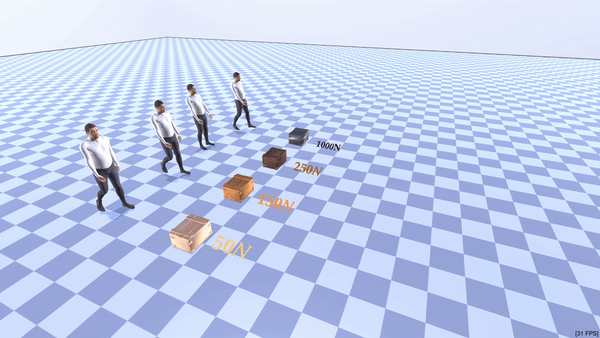

|
Xiaohan Zhang I'm a PhD student working with Prof. Gerard Pons-Moll in the Real Virtual Human Group at MPI Informatics and the University of Tuebingen. I am actively looking for research internships in Spring 2025, and full-time opportunities in research and startups in Summer 2025. Please reach out to me if you find my qualifications relevant. |
ResearchI'm interested in computer vision, deep learning, generative AI, and image processing. Most of my research is about inferring the physical world (shape, motion, color, light, etc) from images, usually with radiance fields. |
|

|
NeRF-Casting: Improved View-Dependent Appearance with Consistent Reflections
Dor Verbin, Pratul Srinivasan, Peter Hedman, Benjamin Attal, Ben Mildenhall, Richard Szeliski, Jonathan T. Barron 3DV, 2025 project page / arXiv Carefully casting reflection rays lets us synthesize photorealistic specularities in real-world scenes. |

|
NeRF-Casting: Improved View-Dependent Appearance with Consistent Reflections
Dor Verbin, Pratul Srinivasan, Peter Hedman, Benjamin Attal, Ben Mildenhall, Richard Szeliski, Jonathan T. Barron 3DV, 2025 project page / arXiv Carefully casting reflection rays lets us synthesize photorealistic specularities in real-world scenes. |
Miscellanea |


{kind=link}